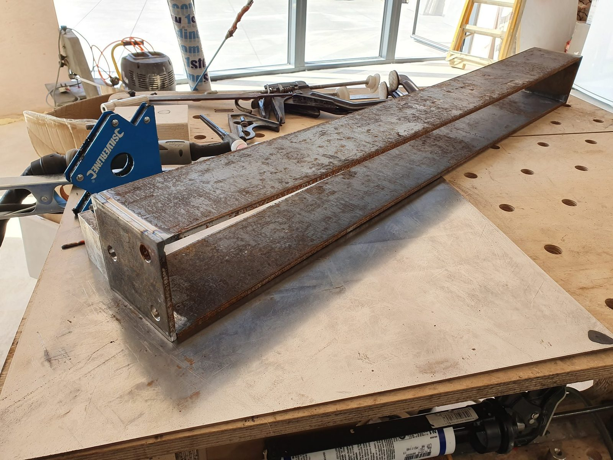
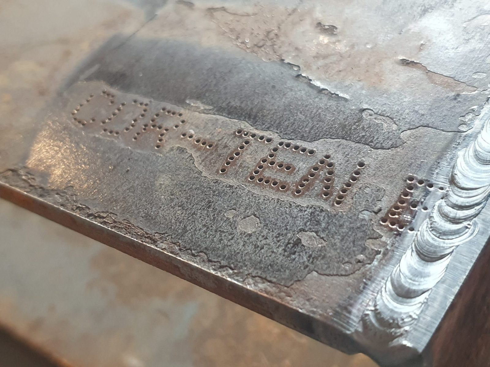
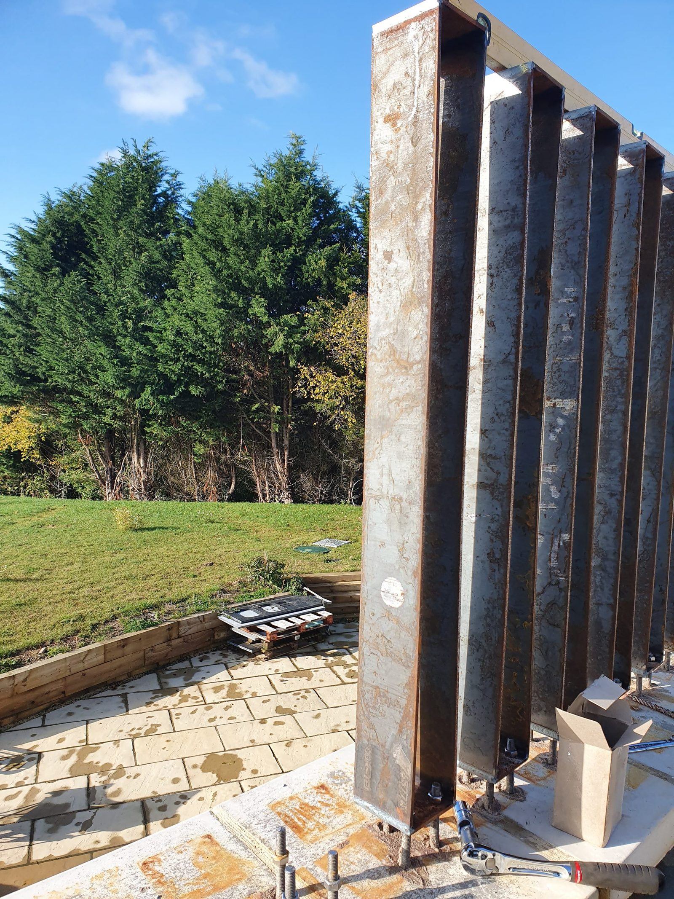
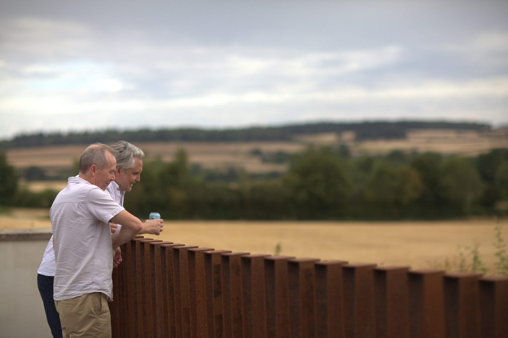
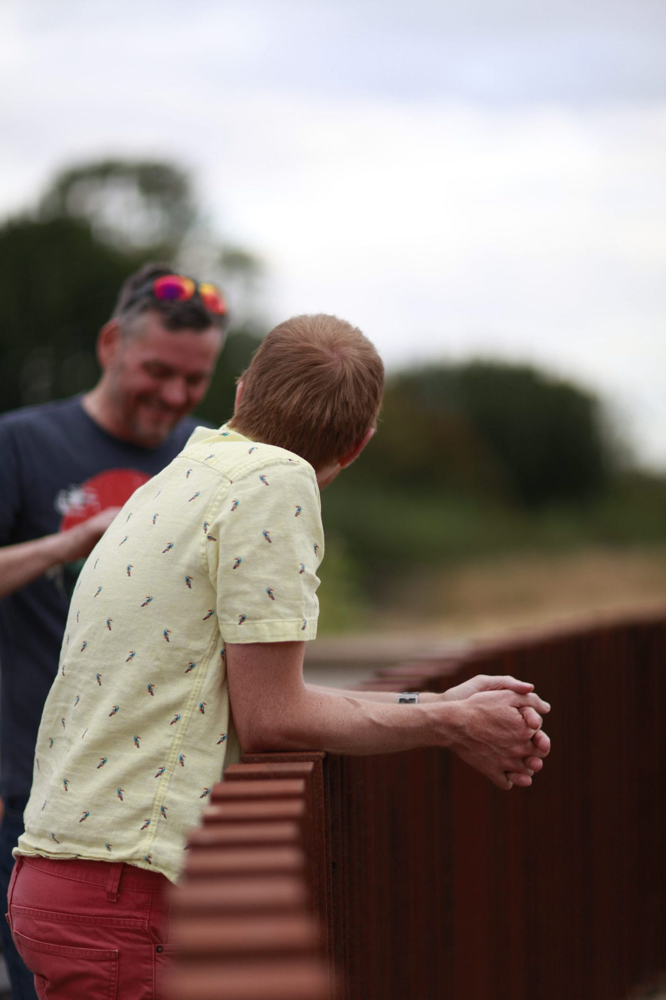
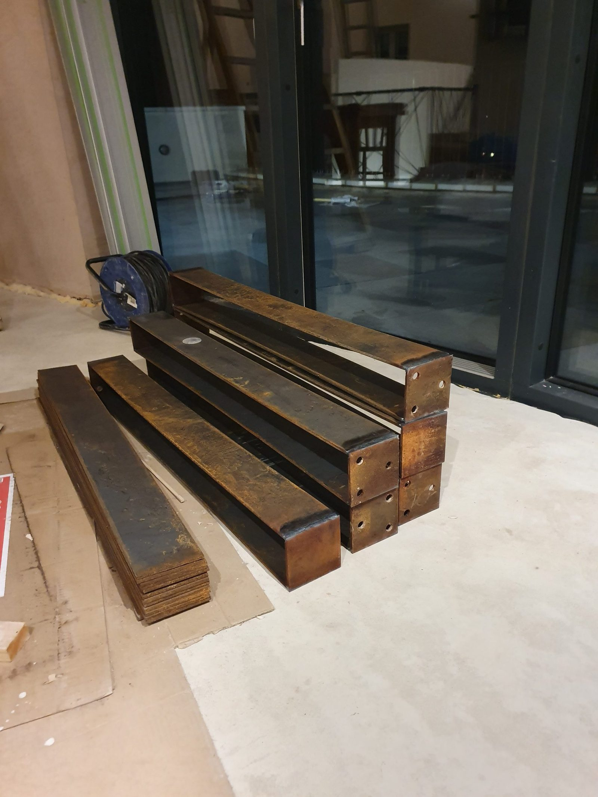
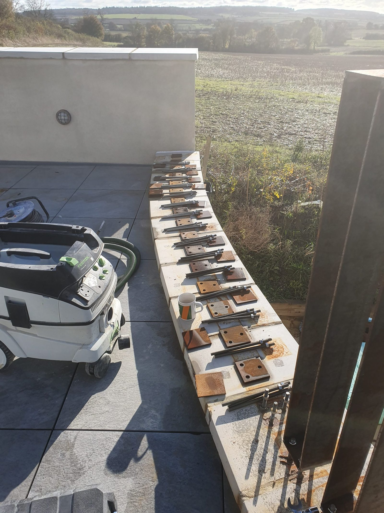
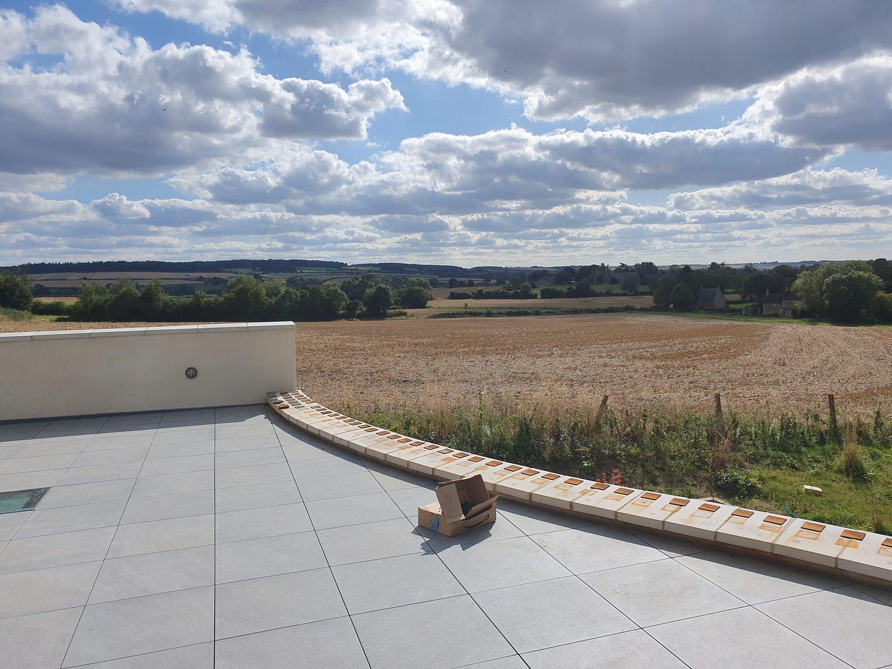
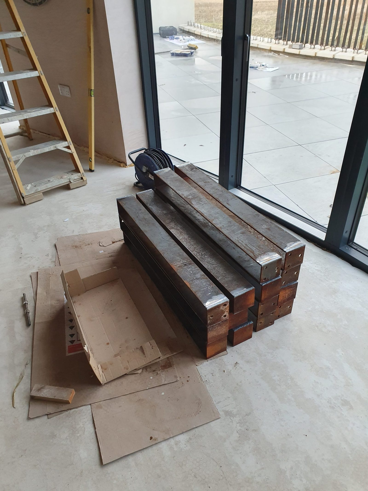

Cutting
Weathering steel / FEA / fabrication
Corten Balustrade
Curved terrace balustrade. Designed at the pub, modelled it with FEA, fabricated it from box section, and left it outside to patina.
Lots of welding. A bought-in railing would have taken an afternoon but would make my house look like a shopping mall. And this is cool because it looks opaque from the angle from the field but we can see out.

- Material
- 6mm corten plate, guillotined to size by a supplier in Sheffield. Corten is quite hard and at this time I didn't have a good enough pillar drill, so I couldn't drill the fixing holes myself (it would work harden and I had loads of problems), so a local firm did those for me.
- Sections
- 65 posts, each a 100 x 100mm box welded up from the flat plate, 1000mm tall and about 1.1m standing once the base is counted. Roughly 90mm between them.
- Welding process
- TIG, with a weathering-grade filler so the welds rust at the same rate as everything else.
- Design check
- FEA on the post and its base. Modelled in Fusion 360, which I would not use again - FreeCAD is capable enough now, and no lock in.
- Run length
- 13m along the terrace, two bends at 10m radius each. Each post sits over three stainless threaded bars resined into the concrete beam, levelled on nuts.
- Build time
- A bit of a marathon: in total six or seven evenings, about ten posts a sitting. A day to drill and resin the threaded bar, then a few hours to hang and level them.
FEA
Under the design load the posts deflect a few millimetres in the direction that matters, which is what you want to know if you want it safe, and to pass building control (albeit they give a load in the regs but no actual displacement specification which is weird). Sideways the numbers were far larger, which does not matter because nothing pushes them that way. The thing the model did not tell me was whether a row of 65 posts at 90mm spacing would whistle in the wind. It doesn't, but that was complete luck.
What I would change
Nothing about the balustrade — it looks really good. I would model the airflow, though, rather than find out about whistling by standing on the terrace in a gale and listening. It took two years to start looking good, and after seven it has really settled in.
Design check
FEA before cutting steel
FEA on the post design and deflection under load, before making a long row of identical mistakes. Screenshot shows displacement (and looks cool).

Welding
From box section to balustrade.
The constraint
A curved edge
The wall curves, so the balustrade had to follow it. Repeated verticals are a nice solution over faceted glass.
Simulation
Analysis, then sparks
Domestic fabrication
Fabricating in a half-built house
Some of it was welded on a table in the unfinished kitchen. Dinner in the background, steel on the table, tools everywhere, we're still married.
In use
It became part of the place.
They didn't fall off












